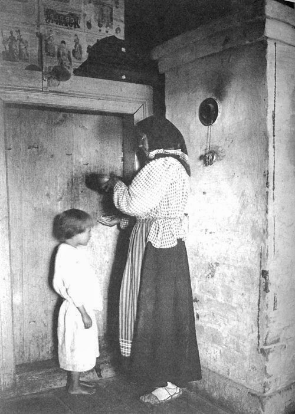

I’ll be using Eastern European here loosely as a geographical region of roughly Soviet Union, as with most things about the region the “what comes from where and influenced which and in what order” is complex and often impossible to unravel. While it is often possible to trace when and where a certain herb was incorporate into written body of knowledge, “folk medicine” knowledge has no start date but was accumulated over centuries and influenced by events like migration, expansions (ie. Mongol, Chinese, Tatar, Russian, Ottoman) and trade. Most of even more secluded areas had ties to their neighbour, who had ties to their own neighbours, so on. That is why some practices, herbs, knowledge and institutions while under different name, thousands of kilometres apart, can have very similar core concepts. Or:
Starting in the mid-thirteenth century and for over three hundred years, Russia was occupied by Tartars and Mongolians. These people brought their own herbal traditions, which were incorporated into healing praxis by local herbalists.
Although practically no information is available regarding the following centuries, from the 15th to the 16th century, the Russian empire expanded. Among its neighbors, Russia counted countries in Western Europe and Asia, and herbalists began to accumulate and adapt the Asian-Arabic and West European herbal traditions. This led to the development of the unique features and advantages of the Russian herbal system, combining autochthonous and introduced knowledge and practice. (Medicinal Plants of the Russian Pharmacopoeia; their history and applications / Alexander N.Shikov et.al - READ IT, it’s fascinating.)
And there will be considerably less sources in this one, since to my advantage my own grandmother was a herbalist (government certified, not some quack mind you - we’ll get to what it means). A lot of knowledge was also passed on, not in formal literature, but by oral tradition. You just knew, you know.
Like taking a child in the dead of the night to the baker to be smothered with twigs covered in fresh ash from the oven to help a skin condition. What skin condition? I have no clue. Apparently my aunt pissed herself from the scare, but whatever condition she had went away.
In the 90’s my grandmother was very sad that bakers did not use old ovens as it would be a sure-fire way to clear my acne. I also had to politely decline her ideas of making urine compresses to heal cuts and bruises.
Anyway, let’s go back into more historical times. I strongly suggest to read my previous post that briefly explains class structure in 19th century Russia as well as do your own research to understand the context.
What was “folk medicine”? Well actually not was but is, and is sometimes referred to as traditional medicine.
Around 19th century, the practice of folk medicine would fall under the term Znakharstvo. Encompassing primitive methods of treatment known from ancient times among the peoples of all countries , which are traditionally accompanied by various rituals. (Wikipedia/Russia)
The term “medicine man” comes from Old Russian - знахорь - znakhor, and can be loosely translated to witch doctor, herbalist or healer. You now understand the pun of word “healer” used in the Pathologic. But if you look at meaning of root word, it’s a derivative of expression meaning “the one in the know”.
according to popular beliefs, ‘znakhor’ is a person who possesses supernatural , magical knowledge and uses it to heal people and livestock, protect against witchcraft, aversion of hail clouds, divination of fate, etc. (Wikipedia/Russia)
Continuing, where did these znakhor’s come from:
Healers used the accumulated initial knowledge about the healing properties of plants, animal products, minerals, as well as the experience of helping and caring for the patient. Ritual ceremonies (conspiracies, spells, etc.) were widely used. They were perceived as necessary and often had a positive psychotherapeutic effect. Many of the widely used remedies and methods (blueberries for diarrhea, onions and garlic for the prevention of scurvy, the application of splintson the injured limb, massage, bloodletting, etc.) turned out to be rational and subsequently entered scientific medicine.

A healer treats the child with spoken water (photo of 1914)
With the accumulation of positive experience, various specializations arose among healers - healers, who chose certain directions in their activities, which were mainly passed on from generation to generation. In Russia, among the healer’s environment, there were specialties:
herbalist, chiropractor, ore launcher - the one who teats by bloodletting, full-time master, keel case master (specialist in hernia repair ), apitherapist (bee treatment). (Wikipedia/Russia)
There are also accounts of healers performing basic surgeries.
To understand what place a znakhor (or a healer like Artemy and Isidor that lived within the community at least partially, since they’re part of two communities), it’s good to remember:
Until the emergence of zemstvo medicine at the end of the 19th century, the healer was the only source of medical care for Russian peasants. Healers accepted the sick both for money and in expectation of other offerings - for example, “for a glass and a treat in a tavern”. (Wikipedia/Russia)
Of course some of the folk healers had completely wrong assumption on treatment of certain diseases, with practices either ineffective or downright dangerous. That aside, for the most part znakhors were important and only providers of healthcare to their communities, and the serfs/peasants would have high respect for them.
So yeah, we’re supposed to talk about the flowers picking, such a small detail:
Due to the location of Russia between West and East, Russian phytotherapy has accumulated and adopted approaches that originated in European and Asian traditional medicine. Phytotherapy is an official and separate branch of medicine in Russia; thus, herbal medicinal preparations are considered official medicaments. (Medicinal Plants of the Russian Pharmacopoeia; their history and applications / Alexander N.Shikov et.al)
You know how I remarked that my grandma was a herbalist not a quack, it’s because there are certain courses and accreditations you need to pass to deal with herbal remedies around Eastern Europe.
(…) active interest in locally grown plants, which has stimulated serious study by traditional healers and early official physicians alike. (…) Scientists have often found that the herbs themselves, which possess unique combinations of chemical components, are more effective than the chemical derivatives). As a result, medical science has also focused on the medicinal values of the herbs themselves and how they could best be incorporated into medical practice. (Same as before)
I think this at least partially explains Artemy’s backstory, many of 19th/20th century traditional medicine practitioners/healers actually were aware of western medical knowledge and attended medical schools. Then resumed practice back within own communities and incorporated their traditional knowledge passed through generations with university knowledge within their own practice. (You know, unlike some peeps who don’t have traditional knowledge to incorporate into their practice and can be sore and sceptical about it.) Many were proud of their inherited traditional knowledge and wrote scholarly articles about their trade and herbs of their location. It is important to note herbalism was not a domain of specific area but a practice that occurred thought-out the territory.
Russia was among the first countries to compile a pharmacopoeia. In 1778, the Pharmacopoeia Rossica was published in St. Petersburg by the Russian Academy of Science. This work contains 770 monographs, including 316 texts relating to herbal medicinal preparations, 147 relating to chemical substances, and 29 relating to the preparation of medicines from animal sources and complex mixtures. (Same as before)
So what happened to this herbs, they were and are still widely used across Eastern Europe. Most interestingly:
On March 4, 1943, Joseph Stalin signed Order No 4654-p of the People’s Commissars Council of the Union of Soviet Socialist Republics "… to study limonnik (Schisandra chinensis (Turcz.) Baill. (Schisandraceae) with the purpose of finding tonic substances” for both soldiers and persons working in the USSR defense industry during the Second World War. (Same as before)
This led to:
As a result of intensive work by scientists in all parts of the country, the concept of herbal substances that would increase “the state of non-specific resistance” under conditions of stress was developed, and the term “adaptogen” was formalized between 1947 and 1960. (Same as before)
The term adaptogen defined by N.V. Lazarev, and was later defined more precisely by the famous herbalists I.I. Brekhman and I.V. Dardymov.
One of the points being:
An adaptogen must produce a nonspecific response, i.e., increase the power of resistance against multiple (physical, chemical or biological) stressors; have a normalizing effect, irrespective of the nature of the pathology; and be nontoxic, innocuous and not influence normal body functions more than required. (Same as before)
Or as in Pathologic where you produce a panacea a solution or remedy for all difficulties or diseases.
The ways of processing the herbs is now recorded, and often take forms of dried herbs, infusions, tinctures, extracts, elixirs.
And as a closing point:
‘The term “alternative medicine” depends on one’s point of view. If we speak about a patient, there is no “alternative” or “not alternative” medicine. In the First place doctors have to help a patient. And we have to decide whether to use bees, to beat the drum and to conjure out evil spirits or give aspirin for headache. Irrespective of what will help, it is the result that matters. “Folk medicine”? I don’t know who has differentiated between these terms! … How can we distinguish them? All the terms and classiffcations are context dependent.’
(Interview fragment in “Culture matters: Integration of folk medicine into healthcare in Russia” / Elena Iarskaia-Smirnova)
There are a lot of quotes here, but I don’t think re-inventing the wheels or rewriting wikipedia is necessary for Tumblr post. On the other hand I felt that not including them would make points too confusing for people that may not have any basis to start with.
Plus imo it’s good fun perspective to consider for Daniil and Artemy’s approach to medicine and the plague and to each other (lol). And why Daniil probably, at least in the beginning, sees Artemy’s proposal of producing the panacea (a solution to all ailments) to heal the plague as complete nonsense. Both are of course at least partially situated historically and culturally just not in specific time period, but are amalgama imo.
edit: It just occurred to me that this is probably the reason why Daniil introduces himself as Bachelor of Medicine. He really wants to establish that he practices the non folk medicine and went to proper school. Maybe? That’d be a lol.
This is of course very brief idea on some parts that influence the whole flower picking/brewing shit you go about with. There is even more contexts and research you can do since there are more cultural references in the mix with the Steppe.